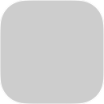

🎨 Silent Feed 图标状态说明
了解浏览器工具栏图标的不同样式代表什么含义
📦 图标视觉元素说明
基础图标 - Silent Feed 的主要标识
波纹动画 - 表示正在处理或发现内容
学习遮罩 - 表示正在了解你的阅读偏好
数字徽章 - 显示未读推荐文章数量
🔷 基础状态（Static & Paused）
🟠 静态状态
扩展正常运行，已完成学习，暂无新内容推荐
⏸️ 暂停状态
扩展已暂停，点击图标可重新启用
📊 状态指示（Learning & Recommend & Error）

📚 学习进度 25%
正在了解你的阅读偏好，蓝色遮罩从下往上填充表示学习进度
📚 学习进度 50%
学习已进行到一半，继续浏览感兴趣的内容可加速完成
📚 学习进度 75%
即将完成学习，之后会开始为你推荐内容
1
📮 推荐阅读 (1 条)
有 1 篇文章推荐给你，点击图标查看
3
📮 推荐阅读 (3 条)
有 3 篇文章推荐给你，点击图标查看
❌ 错误状态
遇到错误时，图标会闪烁红色提醒你
🎬 动画效果（Discover, Fetching, Analyzing）
📡 RSS 发现动画
发现当前页面有 RSS 订阅源，波纹逐个出现
🔄 后台抓取动画
正在后台更新订阅内容，波纹流动显示进度
💭 推荐分析动画
AI 正在分析推荐内容，图标有节奏地闪烁
💡 关键区别：
• RSS 发现：累积显示波纹（0→1→2→3条）
• 后台抓取：每次只显示一条波纹，双向流动（wave1→2→3→2）
• 推荐分析：整体遮罩呼吸，无波纹
• 推荐状态：仅徽章，不使用波纹
• RSS 发现：累积显示波纹（0→1→2→3条）
• 后台抓取：每次只显示一条波纹，双向流动（wave1→2→3→2）
• 推荐分析：整体遮罩呼吸，无波纹
• 推荐状态：仅徽章，不使用波纹
🔀 状态组合示例（按优先级叠加）
学习中 + 错误
学习阶段遇到错误，同时显示学习进度和红色闪烁
2
推荐 + 错误
有推荐内容但遇到错误，数字徽章加红色闪烁
暂停优先显示
即使有推荐内容，暂停状态也会优先显示
⚙️ IconManager 优先级规则：
1️⃣ 错误（可叠加） → 2️⃣ RSS发现 → 3️⃣ 暂停 → 4️⃣ 推荐分析 → 5️⃣ 后台抓取 → 6️⃣ 学习进度 → 7️⃣ 推荐阅读 → 8️⃣ 静态
1️⃣ 错误（可叠加） → 2️⃣ RSS发现 → 3️⃣ 暂停 → 4️⃣ 推荐分析 → 5️⃣ 后台抓取 → 6️⃣ 学习进度 → 7️⃣ 推荐阅读 → 8️⃣ 静态